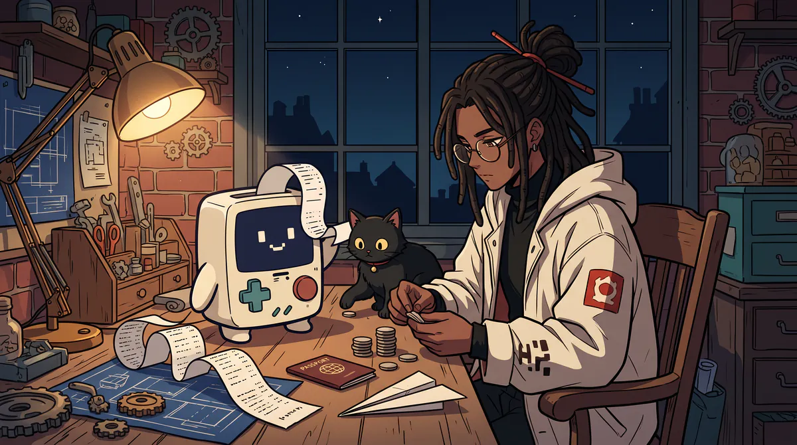
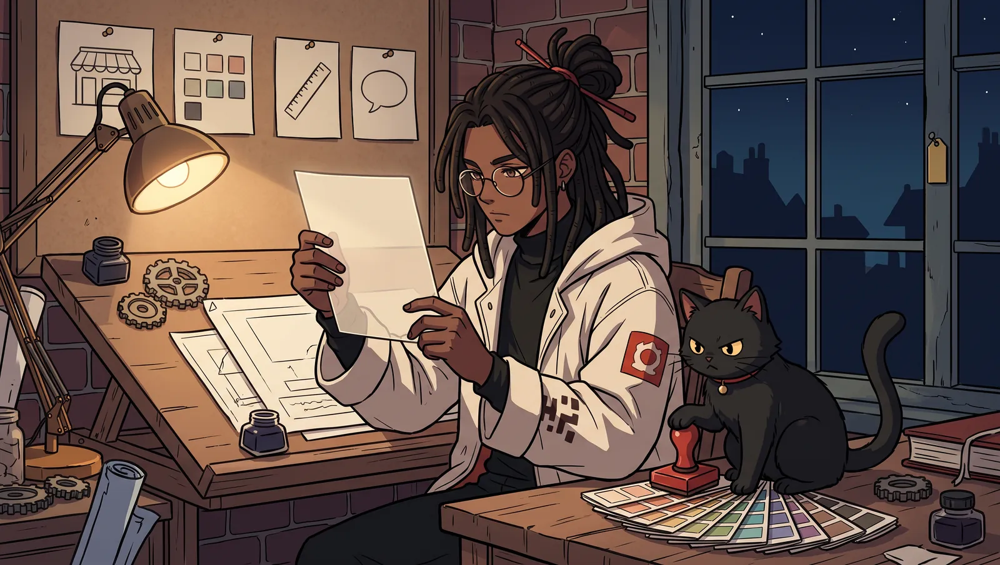

/ LE MANUEL
Gagner sa vie de loin.
Se faire payer depuis l’étranger, fixer son tarif, comprendre la crypto : cinq leçons d’argent. Puis deux cours pour mieux acheter (la marque, le web3), un carnet de route pour travailler de partout, un maître-cours sur la gamification, et quatre services pour aller plus loin.


ÉTEINTE
Deux heures du matin
0:00 / 2:00
La radio de l’atelier
Quatre instrumentaux faits pour l’atelier. Rien ne joue tant que vous n’appuyez pas.
/ LA RONDE DE NUIT
Kūro habite cette page.
Il vous rejoint quand vous lisez, il juge vos réponses, il s’endort sur la radio. Prenez la manette : sept sceaux sont cachés entre la radio, les leçons et les services. Trouvez-les tous, un dessin vous attend.
0 / 7 sceaux
← → marcher · ↑ bondir · ↓ descendre · Espace sauter · Échap quitter
Votre appareil demande moins de mouvement : Kūro dort sur la radio et le jeu est coupé.
/ CINQ LEÇONS · L’ARGENT
Le manuel de l’argent.
Une idée, un geste, une question. Chaque bonne réponse tamponne votre passeport.
0 / 5 tampons
Se faire payer de l’étranger
Un client à l’étranger peut vous payer par quatre routes. Aucune n’est la meilleure partout : comparez le délai, les frais et ce que votre banque accepte.
Virement bancaireLe client vire sur votre compte. Il lui faut votre IBAN ou votre numéro de compte, le code SWIFT/BIC de votre banque et une facture. Demandez d’abord à votre banque comment elle reçoit un virement de l’étranger, et dans quelle devise il vous est crédité.
Plateforme de paiementUn service en ligne encaisse pour vous et reverse sur votre compte ou votre carte. Vérifiez d’abord, sur le site du service lui-même, qu’il ouvre des comptes aux résidents de votre pays et comment on en retire l’argent.
Place de marché freelanceLa plateforme encaisse le client, garde l’argent jusqu’à la livraison, prend sa commission et vous reverse le reste. Simple pour démarrer : lisez sa commission et ses moyens de retrait avant d’accepter une mission.
CryptoLe client envoie des jetons, souvent un stablecoin, sur votre adresse. C’est rapide et irréversible. Légal dans certains pays, interdit dans d’autres, dont l’Algérie (loi 25-10) : vérifiez la loi là où vous vivez.
LA QUESTIONAvant d’accepter un premier paiement de l’étranger, que vérifier d’abord ?
Oui. La route d’abord, le prix ensuite.
Pas tout à fait. Relisez, puis réessayez.

Banques en ligne et comptes multidevises
Un compte multidevises garde plusieurs monnaies côte à côte et vous donne des coordonnées bancaires pour être payé. Ce qui coûte n’est presque jamais l’ouverture : ce sont trois frais.
Le changeLa marge prise quand une devise en devient une autre. Comparez le taux qu’on vous offre au taux du marché le même jour : l’écart est votre vrai prix.
Le transfertUn montant fixe ou un pourcentage à chaque envoi, à chaque réception ou à chaque retrait. Un petit pourcentage pèse lourd sur une grosse facture.
La carte et le retraitDes frais au distributeur, à l’étranger, ou au-delà d’un plafond mensuel. Lisez la grille avant de voyager, pas après.
Quatre questions à poser avant d’ouvrir
- Le service accepte-t-il les résidents de mon pays ?
- Dans quelles devises puis-je recevoir ?
- Comment je retire, et à quel prix ?
- Qui garde et protège mes fonds ?
LA QUESTIONDeux services affichent « 0 frais ». Où regarder ?
Oui. Un taux moins bon que le marché est un frais qui ne dit pas son nom.
Pas tout à fait. Relisez, puis réessayez.
Fixer son tarif journalier
Un tarif ne se devine pas, il se calcule : ce que vous voulez garder, plus vos charges, divisé par les jours réellement facturés.
·
· %
par jour facturé
de l’heure, pour 7 heures par jour
Dans la monnaie que vous tapez.
LA QUESTIONVous travaillez 22 jours par mois. Combien en facturez-vous, en général ?
Oui. Divisez par les jours facturés, pas par les jours travaillés.
Pas tout à fait. Relisez, puis réessayez.

Budget et trésorerie
La trésorerie, c’est le nombre de mois que vous tenez si plus rien ne rentre comme prévu. Elle se calcule en une division.
mois de trésorerie
Vos revenus sûrs couvrent vos dépenses : l’épargne ne bouge pas.
Dans la monnaie que vous tapez.
LA QUESTIONUn client paie à 60 jours. Que faut-il avoir de côté avant de dire oui ?
Oui. Le délai de paiement du client devient votre besoin de trésorerie.
Pas tout à fait. Relisez, puis réessayez.

Crypto 101
Une cryptomonnaie est une ligne dans un registre public. Ce que vous possédez, c’est la clé qui permet de la déplacer.
PortefeuilleUn logiciel ou un appareil qui garde vos clés. Il ne contient pas les pièces : elles restent dans le registre.
Phrase de récupérationUne suite de mots, souvent 12 ou 24, qui recrée vos clés. Qui la lit prend tout. Personne de sérieux ne vous la demandera jamais.
StablecoinUn jeton conçu pour suivre une monnaie, souvent le dollar. Il vaut ce que vaut la solidité de celui qui l’émet.
Frais de réseauChaque envoi paie le réseau qui le transporte. Le montant change selon le réseau et l’heure. Un envoi sur le mauvais réseau peut être perdu.
IrréversibleUn envoi confirmé ne s’annule pas. Vérifiez l’adresse, puis envoyez d’abord un petit montant.
Un projet web3 ? Le cours client vous aide à décider s’il faut une blockchain →
LA QUESTIONQuelqu’un du « support » vous demande votre phrase de récupération.
Oui. Aucun support ne la demande. Jamais.
Pas tout à fait. Relisez, puis réessayez.
Ces leçons sont de l’éducation, pas un conseil financier ni un conseil en placement. Aucun signal de trading, aucune gestion de fonds, aucune promesse de gain.
Les règles changent d’un pays à l’autre. En Algérie, la loi 25-10 de juillet 2025 interdit l’achat, la vente, la détention et la promotion des crypto-actifs : vérifiez toujours la loi là où vous vivez.
/ COURS CLIENT · LA MARQUE, AVANT LE LOGO
Le logo vient après.
Neuf étapes pour savoir ce que vous voulez avant de payer un designer : ce qu’est une marque, pour qui, la promesse, le caractère, la tenue en tout petit, les fichiers à recevoir, la proposition à lire, le nom à protéger, puis le compte. Vos réponses remplissent une fiche que vous pouvez nous envoyer, copier ou imprimer.

Avant d’acheter : le web3
/ NEUF ÉTAPES · UNE FICHE À LA FIN
0 / 9 tampons
- Couches
- Public
- Promesse
- Caractère
- Petit format
- Fichiers
- Proposition
- Nom
- Fiche

Le logo n’est pas la marque
Un logo est un signe ; l’identité, le langage visuel autour (couleurs, lettres, images) ; le système, les règles qui le gardent cohérent ; la marque, ce qu’on dit de vous quand vous n’êtes pas là. Pour le Design Council, l’organisme britannique du design, « votre marque est plus qu’un logo » : c’est tout ce que les gens associent à vous. Il demande si vous, votre équipe et vos clients savez la décrire avant de commander un design.
Ranger quatre éléments dans les quatre couches
-
Le symbole et le nom dessinés
-
La palette de couleurs
-
La règle « jamais le logo sur fond rouge »
-
Ce que vos clients racontent à leurs amis
Notre avis d’atelier Ce classement est celui de notre atelier : c’est ainsi que nous découpons le travail.
Ce que vous avez déjà
Les sources du cours [1]
LA QUESTIONUn designer vous livre un beau logo, seul, en un fichier. Qu’avez-vous ?
Oui. Un signe, c’est le début. Le reste se décide avant.
Pas tout à fait. Relisez, puis réessayez.
Pour qui ?
« Tout le monde » n’est pas un public. Le Design Council, l’organisme britannique du design, place le public visé dans tout brief (le document qui présente le projet au designer). Décrivez une personne : ce qu’elle cherche, où elle vous trouve, ce qui la fait hésiter.
Qui achète ?
Où vous trouve-t-on ?
LA PERSONNE
- Qui
- à remplir
- Cherche
- à remplir
- Nous trouve
- à remplir
- Hésite
- à remplir
LA QUESTIONDeux pistes de logo (les premières propositions du designer) vous plaisent autant. Comment choisir ?
Oui. On juge contre le brief, pas au goût : c’est le conseil du Design Council.
Pas tout à fait. Relisez, puis réessayez.

La promesse et la preuve
Une promesse dit ce que le client obtient chez vous. Une preuve la rend croyable : un délai écrit, un chiffre que vous pouvez montrer, un avis signé. Chez nous, un brief commence par là, avant le premier trait : c’est notre méthode, pas une règle.
Par exemple : « des gâteaux de commande prêts à l’heure dite, ou remboursés » ; « un devis écrit qui ne bouge pas, pose comprise ». Ce sont des exemples, pas des phrases à recopier.
La règle de l’atelier : chaque adjectif se remplace par un fait qu’un client peut constater.
Ce qui le prouve
Votre positionnement, en une grille
- Public
- à remplir
- Besoin
- à remplir
- Promesse
- à remplir
- Preuve
- à remplir
La grille vient de notre atelier : public, besoin, promesse, preuve. La phrase en dessous part dans votre fiche.
LA QUESTIONQuelle promesse se prouve ?
Oui. Un délai se vérifie. « Meilleur » ne se vérifie pas.
Pas tout à fait. Relisez, puis réessayez.
Le caractère
Ne dites pas au designer « je veux du bleu » : le Design Council, l’organisme britannique du design, conseille de décrire le but, pas la solution. Dites ce qu’on doit ressentir, il choisit les moyens. Trois curseurs suffisent.
·
·
·
Le plus proche parmi nos trois identités
AlmaFlowClim
tr4veler.exe
Numidea Labs
Ce sont trois identités faites dans cet atelier : elles montrent une ambiance, pas ce que vous recevrez. Votre identité part de votre fiche.
Les sources du cours [3]
LA QUESTIONQue dire au designer ?
Oui. Le but, pas les moyens : il trouve les moyens.
Pas tout à fait. Relisez, puis réessayez.

Tenir à 16 pixels
Votre marque vivra aussi en tout petit : l’onglet du navigateur, la photo de profil, le tampon. Faites glisser jusqu’à 16 pixels : les traits fins d’une marque détaillée disparaissent, la silhouette d’une marque compacte reste. Chez nous, une identité se livre en famille, du logo complet à la version en une seule encre : c’est notre méthode d’atelier, pas une règle.
·
À taille réelle, 16 px
Deux marques dessinées pour l’exercice : ni la nôtre, ni celle d’un client.
Une famille de logo (notre méthode)
- 16 px La silhouette seule
- 48 px La marque compacte
- 240 px Le logo complet, avec le nom
- Une encre Des formes pleines, une seule couleur
Où votre marque doit tenir en petit
LA QUESTIONVotre logo a des lettres fines et un dégradé. Il doit tenir dans l’onglet du navigateur. Vous demandez…
Oui. Une famille, pas un seul fichier : la petite version se dessine, elle ne se réduit pas.
Pas tout à fait. Relisez, puis réessayez.

Ce que vous recevez
Une identité, ce sont des fichiers, et chacun sert à quelque chose. Ouvrez-les un par un : ce sont ceux à retrouver dans toute proposition.
À quoi sert chaque fichier
Le vectoriel (SVG, PDF)Un dessin fait de formes, pas de points : pour l’imprimeur, l’enseigne, la bâche. Selon la documentation de référence du web (MDN), une image vectorielle SVG se rend à toutes les tailles sans perte de qualité, contrairement à un PNG ou un JPEG.
Le PNG transparentUne image sans fond, pour poser le logo sur un document ou une photo. C’est une image en pixels : chez nous, on la livre assez grande pour l’écran, et on garde le vectoriel pour le reste.
Les versionsCouleur, une seule couleur, noir, blanc ; en long et en carré. Chez nous, c’est ce qui évite de déformer le logo pour le faire tenir quelque part.
La charteLe livret des règles : tailles, marges, couleurs, ce qui est interdit. Il permet à quelqu’un d’autre de faire un visuel cohérent sans vous appeler. Une charte complète donne aussi un rôle à chaque couleur (texte, fond, accent, alerte) et un ordre de lecture (titre, détails, action) : c’est notre liste. Selon les règles d’accessibilité du W3C (WCAG 2.2), un texte courant demande un contraste d’au moins 4,5:1 avec son fond, et 3:1 en grand ; le texte d’un logo n’a pas d’exigence de contraste.
Les polices et leurs licencesUne police a une licence. La SIL OFL, une licence libre pour les polices, permet selon sa propre FAQ de l’utiliser pour un logo et à l’impression. Pour une police payante, demandez qui détient la licence et ce qu’elle couvre.
Les droits, par écritLe guide de l’OMPI (l’Organisation mondiale de la propriété intellectuelle) et de l’INAPI pour l’Algérie (2004) le rappelle : le créateur d’un logo est d’abord titulaire du droit d’auteur ; il conseille de régler ce point dans l’accord initial, ou de faire céder officiellement le droit à votre entreprise. En France, chaque droit cédé doit être nommé dans l’acte (code de la propriété intellectuelle, art. L131-3).
Le master de campagne et ses formatsUn fichier maître en calques séparés (le fond, le sujet, le texte), puis les formats qui en sortent, par exemple un carré, une story verticale, une bannière. Chez nous, on garde le master et l’on change ce que le cadre montre ; une page de règles dit ce qui peut bouger et ce qui ne bouge pas.
Les sources du cours [12] [14] [15] [16] [17]
LA QUESTIONVotre imprimeur demande le logo pour une bâche de 3 mètres. Vous envoyez…
Oui. Un vectoriel reste net à toutes les tailles ; une image en pixels, non.
Pas tout à fait. Relisez, puis réessayez.

Lire une proposition
Avant de signer, lisez ce qui manque autant que ce qui est écrit. Le Design Council, l’organisme britannique du design, conseille de demander au designer « M’avez-vous indiqué tous les coûts ? » et « Quand la propriété du design nous revient-elle ? ». Les lignes que vous marquez « à demander » partent dans votre fiche, y compris pour nous.
-
« Logo livré en JPEG, un fichier. »
-
« Trois questions sur vos clients avant de dessiner. »
-
« Prix : tout compris. » Sans liste.
Chez nous : l’identité de base comprend le logo (complet, compact et en une seule encre), les couleurs, la typographie et le ton de voix. Le « Kit graphique complet » ajoute la charte, des composants réutilisables, le kit réseaux sociaux animé et le master de campagne.
-
Rien sur les droits.
Chez nous : une fois le projet payé, vous recevez les sources vectorielles et une cession des droits écrite, qui nomme l’usage, le lieu et la durée. Nous gardons le droit de montrer le travail.
-
« Polices sous licence OFL, utilisables pour le logo. »
Chez nous : les polices et les photos suivent les conditions de leur propre licence.
-
« Un logo livré en un jour, sans aucune question sur vos clients. »
-
« Calendrier : brief, pistes, choix, finitions, livraison, avec une date chacun. »
Chez nous : deux premières pistes, puis trois séries de retouches à chaque étape.
-
« Couleurs : bleu nuit et corail. » Sans rôle ni contraste.
Les sources du cours [2] [4] [15] [16]
LA QUESTIONUne proposition dit « Prix : tout compris », sans liste. Vous…
Oui. Sans liste, « tout compris » ne se vérifie pas.
Pas tout à fait. Relisez, puis réessayez.
Le nom, et à qui il est
Un logo dessiné n’est pas encore protégé comme marque : une marque se dépose, pays par pays, auprès de l’office national, ou par le système de Madrid que gère l’OMPI. Choisissez un pays pour voir à qui demander et ce que disent les textes officiels.
L’office est l’INAPI ; une marque dure dix ans, renouvelables. Selon la fiche de l’INPI sur l’Algérie (juin 2025), l’INAPI examine lui-même si le nom est libre, et un déposant sans domicile en Algérie passe par un mandataire (quelqu’un qui dépose en son nom). Les taxes sont sur la page de l’INAPI : vérifiez-les le jour du dépôt.
Selon la même fiche, aussi : l’enregistrement prend environ deux ans en moyenne, une marque inutilisée plus de trois ans se perd, et les noms en .dz sont réservés aux entités établies en Algérie ou aux titulaires d’une marque valable en Algérie.
L’office est l’INPI. Une marque dure dix ans, renouvelables sans limite, et doit être utilisée. Barème de l’INPI applicable au 2 juillet 2026 : dépôt 190 € pour une classe (une catégorie de produits ou de services), 40 € par classe en plus, renouvellement 290 € pour une classe. La recherche d’antériorité d’un logo par l’INPI (la recherche des marques déjà déposées qui lui ressemblent) coûte 532 € pour une classe.
Le dépôt se fait auprès du ministère de l’Économie et du Tourisme. Sa page indique 750 AED pour la demande, 750 AED pour la publication et 5 000 AED pour l’enregistrement, soit 6 500 AED, puis 30 jours d’opposition après publication. Un propriétaire étranger passe par un mandataire (quelqu’un qui dépose en son nom).
L’OMPI renvoie vers chaque office national, et vers le système de Madrid pour plusieurs pays en une demande. La question à poser à l’office : ce nom est-il libre dans ma classe (ma catégorie de produits ou de services) ?
Où en est votre nom
La liste vient du guide de l’OMPI et de l’INAPI : facile à lire, à dire et à retenir, sans sens malheureux dans vos langues, domaine vérifié.
Chez nous, le Studio l’écrit à côté de son calculateur : Notre prix comprend la conception sur mesure, des fichiers et un code qui vous appartiennent une fois le projet payé, un seul interlocuteur du premier appel à la livraison, et 30 jours de corrections ensuite.
Et pour une identité, une fois payée : les sources vectorielles et une cession des droits écrite (usage, lieu et durée nommés) ; nous gardons le droit de montrer le travail ; les polices et les photos suivent leur propre licence.
Les sources du cours [5] [6] [7] [8] [9] [10] [11] [12] [13]
LA QUESTIONVotre logo est dessiné et payé. Est-il protégé comme marque en Algérie ?
Oui. Le dépôt est une démarche à part, pays par pays.
Pas tout à fait. Relisez, puis réessayez.

La fiche
Dernières cases : où votre marque va vivre, pour quand, avec quel budget. La fiche fait le compte avec nos prix publiés, puis elle est prête à partir. Rien ne part tant que vous n’appuyez pas.
Où votre marque va vivre
Chaque endroit est un « support » : un endroit où la marque apparaît (enseigne, boîte, page…). Nos prix d’identité se comptent en supports.
En plus
L’identité de base : le logo (complet, compact, une encre), les couleurs, la typographie, le ton de voix. Deux premières pistes, puis trois séries de retouches par étape.
contient : la charte, des composants réutilisables, le kit réseaux sociaux animé, le master de campagne et ses formats.
Le calcul compte un support par endroit coché. Ce qui compte pour un support se confirme au cadrage.
Pour quand ?
Votre budget, par rapport à cette fourchette
Rythme
L’estimation montre alors les semaines raccourcies.
NUMIDEA LABSFICHE DE MARQUE
Sans JavaScript, la fiche ne se remplit pas : imprimez cette page, répondez à la main, ou écrivez-nous sur WhatsApp.
- Activité
- Existant
- J’ai déjà
- Pour qui
- Promesse
- Preuve
- Positionnement
- Caractère
- Proche de
- Trois mots
- Doit tenir en petit
- Supports
- Réseaux sociaux
- En plus
- Nom
- Pays du dépôt
- Où en est le nom
- À clarifier avant de signer
- Pour quand
- Budget
- Qui décide
- Rythme
Le texte brut
Vos réponses restent sur cet appareil. Rien n’est envoyé tant que vous n’appuyez pas sur un bouton.
Ensuite Nous revenons le jour ouvré suivant. Du dimanche au jeudi, 9h–18h. Avec nos questions, puis un périmètre écrit et un prix ferme dès que le cadrage est validé ensemble. Pas une fourchette, un chiffre. Bordj Bou Arréridj · Algérie
Les sources du cours [4]
LA QUESTIONAvant le premier appel, que garder sous la main ?
Oui. Une fiche, un interlocuteur : le Design Council conseille un seul point de contact.
Pas tout à fait. Relisez, puis réessayez.
Neuf sur neuf. Votre fiche est prête, et le dessin de Kūro qui la tamponne est à vous, au format A4.
Télécharger le dessinVotre fiche est le début d’une identité. Le Studio la dessine. Voir le travail de marque au Studio →
Les sources du cours (17)
Les conseils pour commander un design viennent du Design Council ; les règles de marque, des offices (INAPI, INPI, ministère émirien, OMPI) ; les droits, des textes cités. Les classements, la méthode promesse et preuve, et les exemples de l’atelier sont notre pratique, et le cours le dit. Rien ici n’est un conseil juridique. La grille de positionnement, la famille de logo et le test des 16 pixels sont notre méthode ; le seuil de contraste vient du W3C.
- Design Council (UK). How to commission a designer, step 1: Prepare yourself. designcouncil.org.uk(nouvel onglet)
- Design Council (UK). How to commission a designer, step 3: Choose a designer. designcouncil.org.uk(nouvel onglet)
- Design Council (UK). How to commission a designer, step 4: Brief your designer. designcouncil.org.uk(nouvel onglet)
- Design Council (UK). How to commission a designer, step 5: Manage the project. designcouncil.org.uk(nouvel onglet)
- WIPO. Trademarks. wipo.int(nouvel onglet)
- INPI. Les différents types de marque. inpi.fr(nouvel onglet)
- INPI. Tarifs applicables au 2 juillet 2026 (redevances). inpi.fr(nouvel onglet)
- INPI. Tarifs des prestations applicables au 2 juillet 2026. inpi.fr(nouvel onglet)
- INPI. Fiche « La propriété intellectuelle en Algérie », juin 2025. inpi.fr(nouvel onglet)
- INAPI. Qu’est-ce qu’une marque ? inapi.dz(nouvel onglet)
- INAPI. Taxes relatives aux marques (page sans date : vérifier le jour du dépôt). inapi.dz(nouvel onglet)
- OMPI et INAPI. Créer et développer une marque en Algérie (guide pour les PME). wipo.int(nouvel onglet)
- UAE Ministry of Economy and Tourism. Trademark Registration. moet.gov.ae(nouvel onglet)
- Légifrance. Code de la propriété intellectuelle, article L131-3. legifrance.gouv.fr(nouvel onglet)
- SIL. OFL-FAQ (Open Font License). openfontlicense.org(nouvel onglet)
- W3C WAI. Understanding SC 1.4.3: Contrast (Minimum), WCAG 2.2. w3.org(nouvel onglet)
- MDN Web Docs. SVG: Scalable Vector Graphics. developer.mozilla.org(nouvel onglet)
/ COURS CLIENT · LE WEB3, CÔTÉ CLIENT
Le web3, sans fumée.
Huit étapes pour savoir si votre projet a besoin d’une blockchain, ce qui va sur la chaîne et ce qui n’y va pas, ce qu’il coûtera vraiment, ce que dit la loi là où vivent vos utilisateurs, et comment repérer une arnaque. Parfois une chaîne est le bon outil ; ce cours aide à savoir quand. Vos réponses remplissent une fiche à nous envoyer, copier ou imprimer. C’est de l’éducation : aucun conseil en placement, aucun signal, aucune promesse de gain.

Ces leçons sont de l’éducation, pas un conseil financier ni un conseil en placement. Aucun signal de trading, aucune gestion de fonds, aucune promesse de gain.
Les règles changent d’un pays à l’autre. En Algérie, la loi 25-10 de juillet 2025 interdit l’achat, la vente, la détention et la promotion des crypto-actifs : vérifiez toujours la loi là où vous vivez.
Avant d’acheter : la marque
/ HUIT ÉTAPES · UNE FICHE À LA FIN
0 / 8 tampons
- Mots
- Chaîne ?
- Besoin
- Chaîne et base
- Coûts
- Arnaques
- Loi
- Fiche

Les mots
Le web3, c’est un site qui parle à un registre partagé au lieu d’une base de données privée. Avant d’ouvrir les mots, écrivez votre idée en une phrase, sans aucun d’eux.
Quatre mots de plus
BlockchainUn registre copié sur de nombreuses machines, où l’on ajoute des lignes sans réécrire l’historique. Le NIST, l’agence américaine des normes, le décrit ainsi.
PortefeuilleUne application ou un appareil qui garde vos clés. Il ne contient pas les jetons : ils restent sur le réseau (ethereum.org, site de documentation communautaire).
Jeton et NFTUne ligne du registre qui dit qui possède quoi : une unité interchangeable, ou un objet unique. Ce qu’obtient le détenteur d’un NFT dépend de ce que son créateur a prévu (ethereum.org).
Connecter son portefeuilleLe site lit votre adresse publique ; il ne peut rien déplacer sans votre signature. Mais une signature peut être une autorisation de dépense : selon ethereum.org, elle n’expire pas, se déconnecter ne l’annule pas, il faut la révoquer. Se connecter, signer un message et signer une transaction sont trois demandes différentes : l’étape 4 les sépare.
Clé et phrase de récupérationLa clé privée signe ; la phrase la recrée. Le NIST l’écrit : perdre la clé, c’est perdre l’actif. Les autorités européennes : ne la partagez jamais, qui l’a prend le contrôle.
Smart contractUn programme publié dans le registre. Il s’exécute comme il est programmé quand une transaction l’appelle, et son code déployé est public dans le registre. Selon ethereum.org, une fois déployé, il ne se corrige en général pas.
StablecoinUn jeton conçu pour suivre une monnaie. Les autorités européennes préviennent qu’il peut ne pas rester si stable, surtout quand les marchés sont sous tension.
Frais de réseauChaque action paie le réseau, et le montant varie avec la demande. Selon ethereum.org, le frais est payé que l’opération réussisse ou échoue.
Le portefeuille, la phrase de récupération et les envois irréversibles sont aussi dans la leçon Crypto 101 du manuel de l’argent. Ouvrir Crypto 101
Les sources du cours [2] [4] [5] [14] [15] [16] [17] [18]
LA QUESTIONUn site vous demande de « signer » une transaction que vous ne comprenez pas.
Oui. Une signature est un accord, et une autorisation de dépense reste valable jusqu’à ce que vous la révoquiez.
Pas tout à fait. Relisez, puis réessayez.

Faut-il une chaîne ?
Le NIST reprend, dans son guide de 2018, un arbre de six questions du département américain de la Sécurité intérieure : à chaque « non », l’arbre propose un outil ordinaire. Le NIST conclut : à utiliser « seulement dans les situations appropriées ». Répondez pour votre projet, pas pour la technique.

D’abord : vous voulez construire quelque chose sur une chaîne (registre, jeton, NFT, DAO), ou accepter un paiement en crypto ?
Les sources du cours [2]
LA QUESTIONUne seule entreprise, la vôtre, écrit dans le registre. Selon l’arbre…
Oui. Un seul qui écrit : l’arbre propose une base de données.
Pas tout à fait. Relisez, puis réessayez.
Ce que vous voulez vraiment
On demande souvent une technique alors qu’on veut un résultat. Choisissez ce qu’on vous a proposé, ou ce que vous pensiez demander : voici ce qu’on veut d’habitude, et la route ordinaire. Ce tableau est notre avis d’atelier ; les faits de loi ont leur source.
- Ce qu’on veut d’habitude
Un accès réservé, un badge, une carte de membre.
- La route ordinaire (notre avis)
- Des comptes et un espace membres sur un site, une carte imprimable avec un code.
- Ce que disent les textes
- Dans l’UE, les autorités européennes indiquent qu’un NFT unique est hors du champ de MiCA, mais qu’une série ou une collection peut y entrer.
- Ce qu’une chaîne ajoute
- Selon ethereum.org, les NFT servent entre autres de billets et d’accès réservé, et seul leur détenteur peut les vendre ou les échanger. Ce qu’un jeton ajoute à une carte de membre, à notre avis : le membre la détient lui-même et peut la céder.
Vos membres doivent-ils pouvoir revendre ou transférer leur carte ?
Si vous allez sur une chaîne, une proposition devrait lister (notre liste, d’après les sources citées) :
À prévoir, dans ma fiche
Chez nous, la route la plus proche Application web · 6 écrans · 450 000 – 1 200 000 DA
- Ce qu’on veut d’habitude
Faire revenir les clients, récompenser la fidélité.
- La route ordinaire (notre avis)
- Un programme de points dans une base de données.
- Ce que disent les textes
- Dans l’UE, des points de fidélité non transférables sont hors du champ de MiCA, selon les autorités européennes.
Si vous allez sur une chaîne, une proposition devrait lister (notre liste, d’après les sources citées) :
À prévoir, dans ma fiche
Chez nous, la route la plus proche Application web · 6 écrans · 450 000 – 1 200 000 DA
- Ce qu’on veut d’habitude
Être payé par des clients à l’étranger.
Ou : vos acheteurs détiennent de la crypto et veulent payer avec.
- La route ordinaire (notre avis)
- Un paiement par carte ou par virement, pas en crypto.
- Ce que disent les textes
Les règles changent d’un pays à l’autre. En Algérie, la loi 25-10 de juillet 2025 interdit l’achat, la vente, la détention et la promotion des crypto-actifs : vérifiez toujours la loi là où vous vivez.
Le texte précise aussi : la loi interdit d’utiliser des actifs virtuels comme moyen de paiement. Et selon la FTC, l’autorité américaine des consommateurs, un paiement en crypto est en général définitif : pas de remboursement comme avec une carte.
À Dubaï : la question pour la VARA (l’autorité des actifs virtuels de Dubaï) et pour votre avocat est de savoir si vous, ou un prestataire agréé, pouvez recevoir ce paiement.
Depuis l’Algérie, les façons d’être payé de l’étranger sont dans la leçon « Se faire payer » du manuel.
Vous avez déjà un site ?
Chez nous, la route la plus proche Ajouter un paiement à un site existant : à chiffrer au cadrage, pas de prix publié.
- Ce qu’on veut d’habitude
Prouver que personne n’a trafiqué les données.
- La route ordinaire (notre avis)
- Une base de données avec un journal d’accès et des exports signés.
- Ce que disent les textes
- Dans l’arbre repris par le NIST, s’il n’y a aucun problème de confiance sur qui tient les données, « une base de données classique devrait suffire » ; un besoin d’audit renvoie, lui, aux questions suivantes de l’arbre.
Chez nous, la route la plus proche Automatisation · 3 flux · 140 000 – 420 000 DA
- Ce qu’on veut d’habitude
Que les membres votent les décisions (l’idée d’une DAO : une organisation qui vote sur la chaîne).
- La route ordinaire (notre avis)
- Un espace membres avec des votes, des statuts écrits, une forme d’association.
- Ce que disent les textes
- Selon ethereum.org, « le Wyoming, le Vermont et les îles Vierges ont des lois sur les DAO, sous une forme ou une autre ». Ailleurs, ne supposez aucun statut juridique : demandez à un avocat.
Si vous allez sur une chaîne, une proposition devrait lister (notre liste, d’après les sources citées) :
À prévoir, dans ma fiche
Chez nous, la route la plus proche Application web · 6 écrans · 450 000 – 1 200 000 DA
- Ce qu’on veut d’habitude
À préciser ensemble.
- La route ordinaire (notre avis)
- Votre phrase de l’étape 1 et vos réponses de l’étape 2 suffisent pour commencer.
Chez nous, la route la plus proche Pas de prix publié : on en parle d’abord.
Nous ne construisons pas la partie chaîne (contrats, jetons, portefeuilles) ; nous construisons la solution ordinaire, et nous vous aidons à décider.
Les sources du cours [1] [2] [3] [4] [9] [12] [17] [18] [19]
LA QUESTIONVous voulez récompenser vos clients fidèles. La route la plus simple ?
Oui. Des points, une base, et rien à expliquer sur les portefeuilles.
Pas tout à fait. Relisez, puis réessayez.

Ce qui va sur la chaîne, et ce qui reste chez vous
Une chaîne publique laisse n’importe qui vérifier un enregistrement, et rend visible tout ce qu’on y écrit : notre règle d’atelier est d’y mettre le minimum à vérifier, de garder noms, courriels et listes dans votre base, et de faire un site qui marche sans portefeuille. Selon ethereum.org, une transaction envoyée reçoit d’abord un identifiant (le « hash »), puis attend d’être inscrite dans un bloc ; ce n’est qu’ensuite que son reçu dit « réussite » ou « échec ». Suivez un reçu de présence, état par état.
Six états d’un reçu de présence
| Six états d’un reçu de présence | Dans votre base (privé) | Sur la chaîne (public) | Ce que voit le visiteur |
|---|---|---|---|
| Sans portefeuille | Le nom, le courriel, la réservation | Rien | « Votre place est réservée. » |
| Demande d’accord | La réservation | Rien encore : lire votre adresse n’est pas signer | « Votre portefeuille vous demande d’accepter. Lisez ce qu’il autorise. » |
| Envoyée | La réservation | Un identifiant de transaction (le hash), sans reçu | « Envoyé. En attente du résultat. » |
| Confirmée | La réservation | Un reçu au statut « réussite », et l’identifiant public du reçu : rien de personnel | « Reçu de présence vérifié. » |
| Échouée | La réservation | Un reçu au statut « échec » : rien n’a changé, mais les frais de réseau sont payés (ethereum.org) | « L’opération a échoué. Votre réservation reste valable. » |
| Nœud indisponible | La réservation | Pas de réponse du nœud (le serveur par lequel le site lit la chaîne) | « Vérification indisponible pour l’instant. Vous pouvez toujours réserver. » |
Trois demandes du portefeuille
- Se connecter
- Le site lit votre adresse publique : selon ethereum.org, c’est comme une connexion.
- Signer un message
- Ce n’est pas une transaction, mais certaines signatures valent autorisation de dépense : lisez avant d’accepter (étape 1).
- Signer une transaction
- Selon ethereum.org, une instruction signée qui change l’état du registre : envoyée au réseau, avec des frais.
Notre avis d’atelier Avant tout lancement, demandez une démonstration sur un réseau de développement, qu’ethereum.org décrit comme une chaîne locale faite pour tester une application. Avec des données inventées, jamais celles de vos clients : c’est notre règle.
Écrans que la proposition doit dessiner
Les sources du cours [14] [15] [20] [21] [22]
LA QUESTIONJuste après l’envoi, le site affiche l’identifiant de la transaction (le hash). L’opération est…
Oui. Le hash dit « envoyé ». Le reçu dit si c’est réussi.
Pas tout à fait. Relisez, puis réessayez.

Les coûts qu’on oublie
Le prix d’un projet web3 ne s’arrête pas au code. Chaque carte est une ligne de budget qu’une proposition devrait montrer, même sans chiffre : nous ne publions aucun prix de smart contract ni d’audit, et nous n’avons trouvé aucun prix officiel d’audit.
- L’audit
- Une relecture de sécurité du smart contract (le programme publié dans le registre) par des spécialistes. Selon ethereum.org, c’est une couche de protection qui ne trouvera pas tous les bugs, et un contrat déployé ne se corrige en général pas.
- Les frais de réseau
- Chaque action de vos utilisateurs paie le réseau, que l’opération réussisse ou échoue, et le montant varie avec la demande (ethereum.org).
- Les clés d’administration
- Qui peut modifier ou arrêter le contrat ? Selon ethereum.org, un seul détenteur est un point de défaillance unique ; plusieurs signataires réduisent le risque. Et une clé perdue, c’est l’actif perdu (NIST).
- L’après-lancement
- Surveillance, plan d’incident, arrêt d’urgence décidé d’avance : ethereum.org les range parmi les bonnes pratiques. Cela se prévoit et se paie après la mise en ligne.
- Le juridique
- Un avis d’avocat dans chaque pays où vivent vos utilisateurs. L’étape 7 montre pourquoi.
- Le support aux utilisateurs
- Notre avis d’atelier : des gens qui découvrent les portefeuilles posent des questions, et de fausses pages imitent les vraies (le FBI en a décrit en 2023). Il faut quelqu’un pour répondre et prévenir.
Ma fiche prévoit ces lignes
Pour recevoir un paiement en crypto, il n’y a ni contrat ni jeton à construire : les lignes à prévoir sont celles-ci, posées en questions.
- Qui encaisse
- Vous, ou un prestataire agréé ? Et qui convertit en monnaie ? C’est la question à poser au régulateur et à votre avocat (étape 7).
- Si le cours baisse
- Entre l’offre et l’encaissement, si la valeur baisse, qui perd ? À écrire avant le premier paiement.
- Le remboursement
- Selon la FTC, un paiement en crypto est en général définitif : comment rembourserez-vous un client ?
- La comptabilité
- Comment l’enregistrer ? Question pour votre comptable, avant le premier paiement.
Ma fiche prévoit ces lignes
Les sources du cours [2] [3] [9] [14] [17]
LA QUESTIONUn auditeur a relu votre smart contract. Vous êtes…
Oui. L’audit est une couche, pas une garantie.
Pas tout à fait. Relisez, puis réessayez.

Les arnaques
Si vous lancez quelque chose en web3, vos utilisateurs peuvent être visés. Les autorités décrivent les mêmes signes : profit garanti, urgence, demande de phrase de récupération, paiement en crypto seulement, lien qui ressemble au vrai. Triez ces six messages.
-
« Support officiel : pour débloquer votre compte, envoyez votre phrase de récupération. »
-
« Mint (création de jetons) surprise ce soir seulement ! Connectez votre portefeuille ici. » Le lien ressemble au vrai.
-
« Rendement garanti de 3 % par jour. »
-
« Pour réserver le bien, payez l’acompte en crypto à cette adresse. »
-
« Nous avons retrouvé vos fonds perdus. Payez les frais de récupération. »
-
« Rappel : nous ne vous demanderons jamais votre phrase de récupération. »
Pour mes utilisateurs
Les sources du cours [3] [5] [8] [9] [10]
LA QUESTIONUne transaction confirmée vers un escroc…
Oui. Europol : une transaction faite ne se rappelle pas.
Pas tout à fait. Relisez, puis réessayez.

La loi, là où sont vos utilisateurs
La loi décide avant le design. Cochez où sont vos utilisateurs, ou votre entreprise : chaque carte dit ce que dit un texte officiel, et à qui poser la question. Rien ici n’est un conseil juridique.
Mes utilisateurs, ou mon entreprise, sont…
en Algérie
Les règles changent d’un pays à l’autre. En Algérie, la loi 25-10 de juillet 2025 interdit l’achat, la vente, la détention et la promotion des crypto-actifs : vérifiez toujours la loi là où vous vivez.
Le texte précise aussi : la loi n° 25-10 du 24 juillet 2025 (Journal officiel n° 48) interdit d’émettre, d’utiliser et de faire le commerce d’actifs virtuels, de créer ou d’exploiter des plates-formes d’échange, lorsqu’ils servent de moyen de paiement ou d’instrument d’investissement. « Cette interdiction inclut les activités liées au minage de cryptomonnaie. » Peine prévue (art. 31 bis) : deux mois à un an de prison et une amende de 200 000 à 1 000 000 DA, ou l’une des deux. Avant tout projet : un avocat en Algérie.
dans l’Union européenne
Le règlement MiCA (le règlement européen sur les marchés de crypto-actifs) encadre les jetons de monnaie électronique, les jetons se référant à des actifs et les autres crypto-actifs, dont les jetons utilitaires ; selon les autorités européennes, des NFT en série ou en collection peuvent y entrer. Selon l’ESMA (l’autorité européenne des marchés financiers), les prestataires autorisés sous MiCA figurent dans son registre : vérifiez-y le prestataire. À qui demander : le régulateur financier du pays.
en France
Depuis le 1er juillet 2026, selon l’AMF (l’Autorité des marchés financiers), seuls les prestataires de services sur crypto-actifs autorisés selon MiCA (PSCA) peuvent servir des clients en France ; l’AMF publie leur liste blanche. Un prestataire non autorisé risque deux ans de prison et 30 000 € d’amende. Cela vise les prestataires de services sur crypto-actifs, pas tout projet de NFT : votre projet en est-il un ? Question pour l’AMF ou un avocat.
à Dubaï
La VARA (l’autorité des actifs virtuels de Dubaï) encadre les actifs virtuels à Dubaï, hors DIFC (le centre financier international de Dubaï). Ses règles de 2024 : seul un prestataire agréé par la VARA, ou quelqu’un pour son compte avec accord, peut en faire la publicité ; l’annonce doit dire qu’ils peuvent perdre tout ou partie de leur valeur, et ne jamais promettre la sécurité ni un rendement.
dans l’ADGM, à Abu Dhabi (mon entreprise)
Dans l’ADGM (Abu Dhabi Global Market), une entreprise qui exerce une activité sur actifs virtuels demande une licence de la FSRA, son autorité des services financiers, selon la brochure de l’ADGM de 2023. Les règles ont pu changer depuis : vérifiez auprès de la FSRA.
ailleurs
Demandez au régulateur financier du pays où vivent vos utilisateurs, et à un avocat sur place. Ailleurs aux Émirats : demandez au régulateur compétent et à un avocat sur place.
Un avocat a-t-il lu le projet ?
Les sources du cours [1] [4] [6] [7] [11] [12] [13]
LA QUESTIONVous voulez faire la publicité d’un jeton à Dubaï. Qui peut la faire ?
Oui. Et l’annonce doit dire que la valeur peut être perdue, en tout ou en partie.
Pas tout à fait. Relisez, puis réessayez.
La fiche
Vos réponses tiennent sur une page. Complétez ces dernières cases, puis envoyez-la : elle ouvre notre premier échange. Rien ne part tant que vous n’appuyez pas.
Ce que vous avez déjà
Combien d’utilisateurs au départ ?
Pour quand ?
Votre budget, par rapport à cette fourchette
Qui détiendra les clés ?
NUMIDEA LABSFICHE WEB3
Sans JavaScript, la fiche ne se remplit pas : imprimez cette page, répondez à la main, ou écrivez-nous sur WhatsApp.
- Mon idée
- J’ai déjà
- Utilisateurs au départ
- Construire ou être payé
- Les six questions
- Verdict de l’arbre
- Demande de départ
- Route ordinaire
- Site existant
- Revente par les membres
- À prévoir sur la chaîne
- Écrans à prévoir
- Chez Numidea Labs
- Lignes de budget prévues
- Lignes non prévues
- Prévenir les utilisateurs
- Utilisateurs
- Avocat
- Clés
- Si le jeton valait zéro
- Pour quand
- Budget
- Qui décide
Le texte brut
Vos réponses restent sur cet appareil. Rien n’est envoyé tant que vous n’appuyez pas sur un bouton.
Ensuite Nous revenons le jour ouvré suivant. Du dimanche au jeudi, 9h–18h. Avec nos questions, puis un périmètre écrit et un prix ferme dès que le cadrage est validé ensemble. Pas une fourchette, un chiffre. Bordj Bou Arréridj · Algérie
Les sources du cours [1]
LA QUESTIONVotre fiche dit « pas encore » à la question de l’avocat. Avant de payer un développement…
Oui. La loi d’abord, le code ensuite.
Pas tout à fait. Relisez, puis réessayez.
Huit sur huit. Votre fiche est prête, et le fond d’écran de Kūro qui dissipe la fumée est à vous.
Télécharger le fond d’écranUne base de données bien faite, un espace membres, un paiement ordinaire : le Studio les construit. Chiffrer un projet avec la console du Studio →
Les sources du cours (22)
Les faits de loi viennent des textes et des régulateurs (Journal officiel algérien, autorités européennes, ESMA, AMF, VARA, ADGM) ; l’arbre des six questions, du NIST ; les arnaques, de la FTC, de la SEC, du FBI, d’Europol et des autorités européennes ; les mots techniques, d’ethereum.org, site de documentation communautaire. Les routes ordinaires, les listes « à prévoir » et le support aux utilisateurs sont notre avis d’atelier. Rien ici n’est un conseil juridique ni un conseil en placement. Le chemin d’une transaction et les réseaux de développement viennent d’ethereum.org ; la règle « le minimum sur la chaîne » est la nôtre.
- Journal officiel de la République algérienne n° 48 (2025). Loi n° 25-10 du 24 juillet 2025, art. 4, 6 bis, 31 bis. joradp.dz(nouvel onglet)
- NIST IR 8202, Blockchain Technology Overview (Yaga, Mell, Roby, Scarfone, 2018), figure 6 (DHS S&T flowchart) and section 8. nvlpubs.nist.gov(nouvel onglet)
- U.S. Federal Trade Commission, Consumer Advice. What To Know About Cryptocurrency and Scams. consumer.ftc.gov(nouvel onglet)
- European Supervisory Authorities. Crypto-assets explained: what MiCA means for you (factsheet, 2025). esma.europa.eu(nouvel onglet)
- European Supervisory Authorities. Crypto frauds and scams (factsheet, 2025). esma.europa.eu(nouvel onglet)
- ESMA. Markets in Crypto-Assets Regulation (MiCA). esma.europa.eu(nouvel onglet)
- AMF. Fin de la période transitoire pour les PSAN au 1er juillet 2026 (5 février 2026). amf-france.org(nouvel onglet)
- U.S. SEC, Office of Investor Education and Advocacy. Investor Alert: 5 Ways Fraudsters May Lure Victims Into Scams Involving Crypto Asset Securities (29 May 2024). investor.gov(nouvel onglet)
- FBI, Internet Crime Complaint Center. PSA 230804: Criminals Pose as NFT Developers (4 August 2023). ic3.gov(nouvel onglet)
- Europol. Crypto investment scams: how do they work? (infographic). europol.europa.eu(nouvel onglet)
- VARA. Regulations on the Marketing of Virtual Assets and Related Activities 2024, Part I. rulebooks.vara.ae(nouvel onglet)
- VARA. Home page. vara.ae(nouvel onglet)
- ADGM. Virtual Asset Brochure (2023). assets.adgm.com(nouvel onglet)
- ethereum.org (community documentation). Gas and fees. ethereum.org(nouvel onglet)
- ethereum.org (community documentation). Wallets. ethereum.org(nouvel onglet)
- ethereum.org (community documentation). How to revoke smart contract access to your crypto funds. ethereum.org(nouvel onglet)
- ethereum.org (community documentation). Smart contract security. ethereum.org(nouvel onglet)
- ethereum.org (community documentation). Non-fungible tokens (NFT). ethereum.org(nouvel onglet)
- ethereum.org (community documentation). Decentralized autonomous organizations (DAOs). ethereum.org(nouvel onglet)
- ethereum.org (community documentation). Transactions. ethereum.org(nouvel onglet)
- ethereum.org (community documentation). JSON-RPC API. ethereum.org(nouvel onglet)
- ethereum.org (community documentation). Development networks. ethereum.org(nouvel onglet)
/ CARNET DE ROUTE · LA VIE NOMADE
Le carnet de route.
Travailler de partout, sans se raconter d’histoires : trouver ses clients, chiffrer, se protéger, tenir le décalage horaire, garder ses fichiers et ses comptes en sûreté, préparer un départ. Huit étapes, huit tampons. Les chiffres sont les vôtres, ou ceux d’une source nommée.
/ HUIT ÉTAPES · UN TAMPON PAR BONNE RÉPONSE
0 / 8 tampons
- Clients
- Prix
- Devis
- Fuseaux
- Sac
- Sécurité
- Année
- Départ

Trouver ses clients
Les clients ne tombent pas du ciel : ils répondent à des messages. Combien en envoyer ? Cela se compte. Les clients que vous voulez, divisés par la part des gens qui répondent, puis par la part de ceux qui signent.
·
·
·
messages à envoyer par mois
par semaine, à peu près
Les taux de départ sont des exemples, pas des moyennes. Notez vos envois et vos réponses pendant un mois, puis mettez les vôtres.
LA QUESTIONVous envoyez 40 messages : 4 personnes répondent, 1 signe. Vous voulez 3 clients par mois. Que faire ?
Oui. Une signature pour 40 messages, donc 120 messages pour 3 clients. Ou un meilleur message, ou une meilleure offre : les deux taux se travaillent.
Pas tout à fait. Relisez, puis réessayez.

Chiffrer un projet
Un prix de projet, c’est du temps compté avant de commencer : votre tarif journalier, fois les jours estimés, plus une marge pour ce que vous n’avez pas vu venir. Le client, lui, veut un chiffre qui ne bouge plus.
·
· %
le prix à annoncer
à la commande, si vous demandez 40 %
Dans la monnaie que vous tapez. Pour trouver votre tarif journalier : la leçon 3 du manuel de l’argent, plus haut.
LA QUESTIONLe projet prend trois jours de plus que prévu, et le périmètre n’a pas changé. Qui paie ces trois jours ?
Oui, si le prix était ferme. C’est la règle du Studio : « si le travail déborde, l’écart est pour nous ». Si c’est le périmètre qui change, c’est un nouveau devis.
Pas tout à fait. Relisez, puis réessayez.

Le devis qui protège
Un devis signé évite la plupart des disputes, parce qu’il répond d’avance aux questions qui fâchent. Voici cinq lignes, avec ce que le Studio écrit dans les siens. Ce sont nos conditions, pas un modèle juridique.
Le périmètreCe qui est compris, écrit en liste : les pages, les langues, les fonctions. Ce qui n’y figure pas n’est pas compris. C’est la ligne dont dépendent toutes les autres.
L’acompteAu Studio : 40 % à la commande, sur devis signé, et 60 % à la livraison, avant la mise en ligne. Un acompte montre que le projet est réel des deux côtés.
Les retouchesAu Studio : deux séries de retouches par étape, le design puis le développement, sont comprises ; les suivantes sont chiffrées à part. Sans cette ligne, un projet ne finit jamais.
La propriétéAu Studio : une fois le site payé en entier, il appartient au client, avec le code, les fichiers de design et le contenu. Écrivez à quel moment le travail change de mains.
Le délaiAu Studio : le délai ferme est fixé dès que le projet est cadré ensemble, pas avant. Un délai promis avant de connaître le périmètre est une devinette.
LA QUESTIONLe client demande une troisième série de retouches sur le design. Que dit le devis du Studio ?
Oui. Deux séries par étape sont comprises ; les suivantes sont chiffrées à part.
Pas tout à fait. Relisez, puis réessayez.

Travailler en décalé
Un client à six fuseaux de chez vous n’est pas un problème, c’est un calendrier. Ce qui compte, ce sont les heures que vos deux journées partagent : c’est là que se placent les appels. Le reste se fait par écrit.
·
·
heures communes
de à à votre horloge
Aucune heure commune entre deux journées de 9 h à 18 h : l’un des deux devra décaler la sienne, ou tout passera par écrit.
heures d’écart
Deux journées de 9 h à 18 h, en heures entières. L’Algérie est à UTC+1 toute l’année, sans heure d’été ; celle du client, s’il en a une, peut déplacer la fenêtre d’une heure.
Les sources du carnet [9]
LA QUESTIONVous êtes à UTC+1, votre client à UTC−5. À quelle heure, chez vous, proposer l’appel ?
Oui. 16 h chez vous, c’est 10 h chez votre client : l’heure tombe dans les deux journées.
Pas tout à fait. Relisez, puis réessayez.
Le sac et la connexion
Votre bureau tient dans un sac : tout ce qui casse, se perd ou se coupe vous arrête net. Trois précautions : des copies de vos fichiers, assez de débit pour vos appels, et une deuxième connexion.
La règle 3-2-1Au moins trois copies de vos fichiers, sur deux appareils, dont une sauvegarde gardée ailleurs. Le centre britannique de cybersécurité (NCSC) la décrit comme une stratégie courante, valable dans la plupart des cas : si une copie est touchée, il en reste une intacte.
L’appel vidéoUn appel à deux demande peu. Zoom recommande 600 kbit/s dans chaque sens pour une vidéo de bonne qualité, et 1,2 Mbit/s en 720p. Google Meet compte jusqu’à 1,7 Mbit/s par participant en 720p, et baisse la définition si le débit manque. Ce sont les chiffres des éditeurs : testez votre connexion avant l’appel, pas pendant.
La connexion de secoursLe Wi-Fi du logement peut tomber le jour d’un appel. Gardez une deuxième voie : le partage de connexion de votre téléphone. C’est aussi ce que le NCSC conseille plutôt qu’un point d’accès inconnu : passer par le réseau mobile.
Les sources du carnet [1] [2] [3] [4]
LA QUESTIONOn vous vole votre sac : l’ordinateur, et le disque de sauvegarde qui était dedans. Que manquait-il ?
Oui. C’est le « 1 » de 3-2-1 : une copie hors du sac, en ligne ou chez quelqu’un de confiance.
Pas tout à fait. Relisez, puis réessayez.

La sécurité en voyage
En voyage, vos comptes valent plus que votre matériel : un ordinateur se rachète, une messagerie piratée beaucoup moins. Cinq gestes, tous recommandés par une agence publique de cybersécurité.
Le Wi-Fi publicL’agence française, l’ANSSI, conseille d’éviter quand c’est possible les réseaux non maîtrisés : Wi-Fi d’hôtel, de gare ou de café. Le NCSC britannique dit de même : le plus simple est de ne pas se connecter à un point d’accès inconnu et de passer par le réseau mobile ; un VPN est une autre solution.
La double validationLe NCSC recommande d’activer la validation en deux étapes sur vos comptes les plus importants : messagerie, banque, réseaux sociaux, achats en ligne. Elle garde les voleurs dehors même s’ils connaissent votre mot de passe.
Les mots de passeUn mot de passe différent pour chaque compte, dit l’ANSSI. Et un gestionnaire de mots de passe pour les retenir à votre place, dit le NCSC, qui conseille aussi de choisir les clés d’accès (passkeys) partout où elles sont proposées.
Le chiffrementLe NCSC conseille que tout ordinateur portable utilise un chiffrement qui exige un mot de passe au démarrage : BitLocker sous Windows, FileVault sous macOS. Gardez la clé de récupération en lieu sûr. Et avant de partir, l’ANSSI conseille de vous informer sur la législation du pays de destination, y compris sur les moyens de chiffrement.
Sur placeTrois habitudes du guide de l’ANSSI pour les professionnels en déplacement : verrouillez votre session dès que vous vous éloignez, même un instant ; ne branchez pas une clé USB qu’on vous offre sans l’avoir fait vérifier ; emportez le strict minimum de données.
Les sources du carnet [5] [4] [6] [7]
LA QUESTIONÀ l’aéroport, vous devez vous connecter à un compte important. Le plus sûr ?
Oui. Le réseau mobile plutôt qu’un réseau que vous ne maîtrisez pas : c’est le conseil du NCSC comme celui de l’ANSSI.
Pas tout à fait. Relisez, puis réessayez.

L’année d’un indépendant
Une année compte 52 semaines, mais vous n’en facturez qu’une partie : il y a les congés, les jours fériés, la maladie, et tout le travail que personne ne paie. Comptez vos jours facturés avant de vous promettre un revenu.
·
· %
·
jours facturés par an
par mois, en moyenne
Congés, jours fériés et maladie vont dans les semaines sans travail. La part facturée de départ est un exemple : mesurez la vôtre.
LA QUESTIONVous travaillez 5 jours par semaine et vous en facturez 60 %. Sur une semaine, cela fait…
Oui. Les deux autres jours existent bel et bien : prospection, devis, administratif, apprentissage. C’est votre tarif journalier qui les paie.
Pas tout à fait. Relisez, puis réessayez.

Avant de partir
Partir travailler ailleurs, c’est quatre dossiers à ouvrir avant d’acheter le billet : le séjour, les impôts, la santé, la banque. Les réponses dépendent de votre nationalité, de votre statut et du pays. Cette leçon vous donne les questions, pas les réponses.
Le séjourChaque pays a ses règles d’entrée et de durée. Un exemple officiel : dans l’espace Schengen, un court séjour dure en général au maximum 90 jours sur toute période de 180 jours, et la Commission européenne publie une calculatrice pour le vérifier. À demander au consulat : ce visa m’autorise-t-il à travailler à distance pour des clients d’un autre pays ?
Les impôtsOù payez-vous vos impôts si vous passez plusieurs mois ailleurs ? Cela tient à votre résidence fiscale, et aux accords entre les deux pays. À demander à l’administration fiscale ou à un comptable, avant de partir : à partir de quand suis-je résident ici, et que dois-je encore déclarer chez moi ?
La santéÀ demander à votre assurance : suis-je couvert hors de mon pays, pendant combien de temps, et pour un rapatriement ? Et au consulat : mon visa exige-t-il une assurance ?
La banque et le téléphoneÀ vérifier avant le départ : ma carte fonctionne-t-elle à l’étranger, et à quels frais ? Ma banque envoie-t-elle ses codes par SMS, et mon numéro les recevra-t-il là-bas ? Qui reçoit mon courrier pendant ce temps ?
Les sources du carnet [8]
LA QUESTIONVous sortez de l’espace Schengen une journée, puis vous y revenez. Le compteur des 90 jours…
Oui. On compte 180 jours en arrière depuis chaque jour du séjour : sortir une journée n’efface rien. La calculatrice de la Commission fait le compte pour vous.
Pas tout à fait. Relisez, puis réessayez.
Huit sur huit. Le fond d’écran du carnet est à vous : la terrasse, la nuit, au format de votre téléphone.
Télécharger le fond d’écranUn site qui répond à vos clients pendant que vous dormez dans un autre fuseau, ça se construit. En parler au Studio →
Les sources du carnet (9)
Les conseils de sécurité, de sauvegarde, de débit et de séjour viennent de ces sources ; les chiffres des calculatrices sont les vôtres. Le guide de l’ANSSI date de 2019 et s’adresse à des salariés : ses gestes valent aussi pour un indépendant. Rien ici n’est un conseil juridique ou fiscal.
- NCSC (UK). 10 Steps to Cyber Security: Data security. ncsc.gov.uk(nouvel onglet)
- Zoom Support. Zoom system requirements: Windows, macOS, Linux (recommended bandwidth for meetings). support.zoom.com(nouvel onglet)
- Google Workspace Admin Help. Prepare your network for Meet meetings & live streams. support.google.com(nouvel onglet)
- NCSC (UK). Cyber Security Small Business Guide, October 2020. ncsc.gov.uk(nouvel onglet)
- ANSSI. Sécurité numérique : bonnes pratiques à l’usage des professionnels en déplacement, version 1.0, mai 2019. messervices.cyber.gouv.fr(nouvel onglet)
- NCSC (UK). Top tips for staying secure online: Turn on 2-step verification (2SV). ncsc.gov.uk(nouvel onglet)
- NCSC (UK). Top tips for staying secure online: Managing your passwords (reviewed 21 May 2026). ncsc.gov.uk(nouvel onglet)
- European Commission, Migration and Home Affairs. Short-stay calculator (27 October 2025). home-affairs.ec.europa.eu(nouvel onglet)
- IANA Time Zone Database, file “africa”, zone Africa/Algiers (release 2026f). data.iana.org(nouvel onglet)
/ MAÎTRE-COURS · LA GAMIFICATION
Le jeu juste.
La gamification sans poudre aux yeux : ce que c’est, pourquoi ça marche, ce que dit la recherche, ce que ça rapporte, quand ça abîme, et comment ce site s’en sert. Huit niveaux, huit stickers, toutes les sources.

/ HUIT NIVEAUX · UN STICKER PAR BONNE RÉPONSE
0 / 8 stickers


C’est quoi, au juste ?
La gamification, c’est emprunter au jeu quelques-uns de ses ressorts pour une activité qui n’est pas un jeu : un cours, une appli, un site. L’activité reste la vraie ; le jeu lui prête sa façon de donner envie.
La définition« L’usage d’éléments de design de jeu dans des contextes non ludiques » : la définition proposée par Deterding et ses collègues en 2011, celle que la recherche reprend depuis.
Ce que ce n’est pasCe n’est pas fabriquer un jeu entier, et ce n’est pas un habillage. Si on retire le jeu et qu’il ne reste rien d’utile, ce n’était pas de la gamification.
Le piège des pointsEn 2010, la conceptrice de jeux Margaret Robertson écrit que le mot juste pour ce qu’elle voit alors est « pointsification » : des points et des badges posés sur n’importe quoi, sans le jeu.
LA QUESTIONLequel des trois est de la gamification ?
Oui. Le cours reste un cours ; la barre lui prête un ressort du jeu : voir qu’on avance.
Pas tout à fait. Relisez, puis réessayez.

Pourquoi ça marche
Un bon jeu ne retient pas par ses points. Il nourrit trois besoins que la psychologie décrit depuis longtemps : se sentir capable, se sentir libre, se sentir relié. Quand une activité les nourrit, on y revient sans y être poussé.
CapableUn retour immédiat, des paliers à sa portée : on voit qu’on progresse. C’est le besoin de compétence.
LibreOn choisit son chemin et son rythme. Ce qui devient obligatoire cesse d’être un jeu. C’est le besoin d’autonomie.
ReliéJouer avec d’autres, ou appartenir à un monde commun. C’est le besoin de lien.
D’où ça vientDe la théorie de l’autodétermination de Ryan et Deci (2000) : trois besoins psychologiques, la compétence, l’autonomie et le lien. Satisfaits, ils renforcent la motivation ; contrariés, ils l’affaiblissent.
Les sources du cours [3]
LA QUESTIONUne barre de progression nourrit d’abord quel besoin ?
Oui : elle montre le chemin déjà fait. C’est de la compétence rendue visible.
Pas tout à fait. Relisez, puis réessayez.
Ce que dit la recherche
Est-ce que ça aide vraiment à apprendre ? En 2020, Sailer et Homner ont réuni 38 publications, soit 40 expériences. Leur réponse : oui, des effets petits mais réels, et pas tous aussi solides.
Les savoirsSur ce qu’on apprend : g = 0,49. C’est le résultat le plus stable de l’étude, même en ne gardant que les expériences les plus rigoureuses.
La motivationSur la motivation : g = 0,36. Les auteurs le disent moins stable que le premier.
Les actesSur ce qu’on fait vraiment : g = 0,25, le plus petit des trois, et lui aussi moins stable.
La nuanceDeux revues plus larges le disent autrement. Hamari et ses collègues (2014, 24 études) : des effets positifs, qui dépendent beaucoup du contexte et des personnes. Koivisto et Hamari (2019, 819 études) : des résultats plutôt positifs, avec une part remarquable de résultats mitigés.
Les sources du cours [4] [5] [6]
LA QUESTIONQue retenir de ces études ?
Oui : des effets réels et modestes, qui dépendent du contexte. Personne de sérieux ne promet davantage.
Pas tout à fait. Relisez, puis réessayez.

Les mécaniques, une à une
Une mécanique de jeu répond à un ressort précis. On en choisit une ou deux pour un but, pas dix pour décorer.
L’avance offerteNunes et Drèze (2006) : une tâche de huit étapes présentée comme dix étapes dont deux déjà faites est plus souvent terminée, et plus vite. Commencer à 2 sur 10 engage plus que commencer à 0 sur 8.
L’approche du butKivetz et ses collègues (2006), dans un vrai café : plus les clients approchent du café offert, plus ils achètent souvent. On accélère près de la ligne d’arrivée.
Les badgesSur Stack Overflow, Anderson et ses collègues (2013) voient l’activité monter à l’approche d’un badge, puis retomber. Une étude de 2020 nuance : environ 20 % des utilisateurs y réagissent.
Les sériesDuolingo écrit à ses actionnaires, en novembre 2026, mener des centaines d’expériences, notamment sur les notifications et les séries, pour faire revenir ses utilisateurs : 64,9 millions par jour au troisième trimestre 2026.
La collectionCompléter une série d’objets : c’est ce que font les huit stickers de ce cours. Vous avez la mécanique sous les yeux.
Les sources du cours [7] [8] [9] [10] [11]
LA QUESTIONDeux cartes de fidélité demandent huit lavages. Laquelle est le plus souvent terminée ?
Oui. Le même effort, mais on a déjà commencé : c’est l’effet de progression offerte.
Pas tout à fait. Relisez, puis réessayez.

Ce que ça fait à une marque
Ce niveau est notre lecture de praticiens, pas un résultat d’étude. Le jeu donne à une marque trois choses qu’un logo seul ne donne pas : une voix, un monde, et une raison de revenir.
Une voixIci, Kūro juge vos réponses en deux mots. Une marque qui réagit à ce que vous faites a un caractère ; une marque qui récite n’en a pas.
Un mondeL’atelier de nuit, la radio, la console DOURO·8, les sceaux : tout vient du même endroit. On reconnaît la marque sans voir son logo.
Un rituelDes tampons, des sceaux, des stickers : de petites fins à atteindre, qui donnent une raison de finir la page et d’y revenir.
La limiteSi le jeu cache l’offre, le prix ou le contact, il travaille contre la marque. Le jeu sert le message ; il ne le remplace pas.
LA QUESTIONQu’est-ce qu’une marque gagne d’abord à être jouable ?
Oui. Le reste peut suivre, mais c’est le caractère qui fait revenir.
Pas tout à fait. Relisez, puis réessayez.
Ce que ça rapporte : des cas réels
Quatre cas, chacun avec sa source et sa limite. Deux chiffres viennent des entreprises elles-mêmes, et un troisième d’une campagne de marque : c’est dit à chaque fois.
StarbucksLe programme Starbucks Rewards compte 35,8 millions de membres actifs aux États-Unis, et 59 % des montants encaissés dans les cafés que l’enseigne exploite elle-même aux États-Unis viennent de ses membres. Chiffres publiés par Starbucks pour le trimestre clos fin juin 2026.
DeloitteDeloitte a ajouté des éléments de jeu à sa plateforme de formation des cadres. La Harvard Business Review (2013) rapporte 37 % d’utilisateurs en plus à y revenir chaque semaine. Un chiffre de l’entreprise, sans groupe de comparaison.
FolditUn jeu en ligne où l’on replie des protéines. En 2011, ses joueurs produisent en trois semaines un modèle assez juste pour que des chercheurs déterminent la structure d’une enzyme d’un rétrovirus du singe. Le résultat est publié dans Nature Structural & Molecular Biology.
La loterie des radarsStockholm, 2010 : pendant trois jours, les conducteurs qui respectent la limite participent à une loterie. La vitesse moyenne annoncée passe de 32 à 25 km/h. Un cas célèbre mais fragile : trois jours, pas de groupe témoin, et un chiffre donné par le sponsor, Volkswagen.
Les sources du cours [12] [13] [14] [15] [16]
LA QUESTIONLequel de ces cas repose sur une publication scientifique ?
Oui. Les autres sont des chiffres d’entreprise ou de campagne : utiles, à lire comme tels.
Pas tout à fait. Relisez, puis réessayez.

Quand ça abîme
Le jeu peut aussi démotiver, pousser, piéger. Savoir où ça casse fait partie du métier.
La récompense promiseLepper, Greene et Nisbett (1973) : des enfants qui aimaient déjà une activité s’y intéressent moins après l’avoir faite pour une récompense promise. Ceux qui reçoivent une récompense surprise, ou rien, gardent leur intérêt.
La classe gamifiéeHanus et Fox (2015) suivent deux classes pendant seize semaines. Celle qui a des badges et un classement finit moins motivée, moins satisfaite, avec de moins bonnes notes à l’examen. Une petite étude, mais elle prévient : le classement n’est pas un cadeau pour tout le monde.
La prévision de GartnerEn novembre 2012, le cabinet Gartner prévoit que 80 % des applications gamifiées de l’époque manqueront leurs objectifs d’ici 2014, surtout à cause d’une mauvaise conception. C’est une prévision, pas une mesure.
Les piègesL’autorité américaine de protection des consommateurs (FTC) publie en 2022 un rapport sur les « dark patterns », ces interfaces qui poussent à des choix qu’on n’aurait pas faits. La même année, l’éditeur de Fortnite accepte de verser 245 millions de dollars pour rembourser des achats non voulus.
Les sources du cours [17] [18] [19] [20] [21]
LA QUESTIOND’après Gartner, pourquoi la plupart de ces projets devaient-ils échouer ?
Oui. Ce n’est pas le jeu qui échoue, c’est le jeu mal pensé pour son but.
Pas tout à fait. Relisez, puis réessayez.


Le jeu juste : nos règles, ici
Ce site joue, et il s’est donné des règles. Les voici, avec l’endroit où les vérifier.
Rien ne démarre seulLa radio, les clips, Kūro : tout attend votre geste, et tout s’arrête d’un geste. Sur un appareil réglé sur « moins de mouvement », rien ne bouge. Aller voir : la radio
Le prix ne joue pasLa calculatrice DOURO·8 a l’air d’une console, mais son reçu additionne des lignes et son total est leur somme exacte. Le jeu rend le prix lisible ; il ne le maquille pas. Aller voir : la calculatrice
Un dessin, pas une remiseSept sceaux ouvrent un dessin. Huit niveaux donnent huit stickers. Aucune récompense ici ne s’échange contre votre adresse ou contre un achat. Aller voir : la ronde de nuit
Rien ne sort d’iciTampons, sceaux et stickers restent dans votre navigateur. Ils ne sont envoyés nulle part ; il n’y a ni compte ni classement.
Pas de pressionAucune série à ne pas rompre, aucun compte à rebours. Vous pouvez partir et revenir : votre progression vous attend.
LA QUESTIONSur ce site, que reçoit-on pour sept sceaux ?
Oui. C’est notre règle : on récompense par quelque chose à regarder, jamais par une pression à acheter.
Pas tout à fait. Relisez, puis réessayez.
Huit sur huit. La planche de stickers est à vous, pour vos messages ou votre écran.
Télécharger la planche
Un site, un cours ou une marque qui joue juste, ça se construit. En parler au Studio →
Les sources du cours (21)
Chaque chiffre de ce cours vient de l’une de ces sources. Là où une étude est petite, ou un chiffre donné par l’entreprise elle-même, le niveau le dit.
- Deterding, S., Dixon, D., Khaled, R. & Nacke, L. (2011). From game design elements to gamefulness: defining “gamification”. MindTrek ’11. doi.org(nouvel onglet)
- Robertson, M. (2010). Can’t play, won’t play. Quoted in J. Juul, “Gamification backlash roundup” (2011). jesperjuul.net(nouvel onglet)
- Ryan, R. M. & Deci, E. L. (2000). Self-determination theory and the facilitation of intrinsic motivation, social development, and well-being. American Psychologist, 55(1). doi.org(nouvel onglet)
- Sailer, M. & Homner, L. (2020). The Gamification of Learning: a Meta-analysis. Educational Psychology Review, 32(1). doi.org(nouvel onglet)
- Hamari, J., Koivisto, J. & Sarsa, H. (2014). Does Gamification Work? A Literature Review of Empirical Studies on Gamification. HICSS 47. doi.org(nouvel onglet)
- Koivisto, J. & Hamari, J. (2019). The rise of motivational information systems: A review of gamification research. International Journal of Information Management, 45. doi.org(nouvel onglet)
- Nunes, J. C. & Drèze, X. (2006). The Endowed Progress Effect: How Artificial Advancement Increases Effort. Journal of Consumer Research, 32(4). doi.org(nouvel onglet)
- Kivetz, R., Urminsky, O. & Zheng, Y. (2006). The Goal-Gradient Hypothesis Resurrected. Journal of Marketing Research, 43(1). doi.org(nouvel onglet)
- Anderson, A., Huttenlocher, D., Kleinberg, J. & Leskovec, J. (2013). Steering User Behavior with Badges. WWW ’13. doi.org(nouvel onglet)
- Hoernle, N., Kehne, G., Procaccia, A. D. & Gal, K. (2020). The Phantom Steering Effect in Q&A Websites. IEEE ICDM 2020. arxiv.org(nouvel onglet)
- Duolingo, Inc. (3 November 2026). Shareholder Letter, Q3 2026. sec.gov(nouvel onglet)
- Starbucks Coffee Company (7 July 2026). Starbucks Card, Loyalty & Mobile Dashboard, Q3 FY26. s203.q4cdn.com(nouvel onglet)
- Meister, J. C. (2 January 2013). How Deloitte Made Learning a Game. Harvard Business Review. hbr.org(nouvel onglet)
- Khatib, F., DiMaio, F., Foldit Contenders Group, Foldit Void Crushers Group, Cooper, S. et al. (2011). Crystal structure of a monomeric retroviral protease solved by protein folding game players. Nature Structural & Molecular Biology, 18(10). doi.org(nouvel onglet)
- University of Washington (19 September 2011). Gamers succeed where scientists fail. washington.edu(nouvel onglet)
- AAP FactCheck (16 September 2021). Sweden’s “speed camera lottery” hit a red light years ago. aap.com.au(nouvel onglet)
- Lepper, M. R., Greene, D. & Nisbett, R. E. (1973). Undermining children’s intrinsic interest with extrinsic reward. Journal of Personality and Social Psychology, 28(1). doi.org(nouvel onglet)
- Hanus, M. D. & Fox, J. (2015). Assessing the effects of gamification in the classroom. Computers & Education, 80. doi.org(nouvel onglet)
- Gartner (27 November 2012), press release, as reported by Digital News Asia: “80 percent of gamified apps will fail”. digitalnewsasia.com(nouvel onglet)
- U.S. Federal Trade Commission (September 2022). Bringing Dark Patterns to Light. Staff report. ftc.gov(nouvel onglet)
- U.S. Federal Trade Commission (19 December 2022). Fortnite Video Game Maker Epic Games to Pay More Than Half a Billion Dollars over FTC Allegations. ftc.gov(nouvel onglet)
/ QUATRE SERVICES · PRIX FIXE
Pour aller plus loin, à deux.
Les leçons sont gratuites. Si vous voulez qu’on regarde votre situation ensemble, voici quatre services à prix fixe : le prix est écrit, il ne bouge pas.
-
Appel 1:1
3 000 DA
Une heure sur votre situation : se faire payer de l’étranger, choisir ses comptes, fixer ses prix, premiers pas en crypto.
-
Mise en place accompagnée
6 000 DA
Vous ouvrez et réglez vos comptes, votre portefeuille et votre facturation pendant la séance, écran partagé.
-
Pack de départ freelance
15 000 DA
Vos profils sur les plateformes, vos modèles de devis et de facture, votre grille de prix.
-
Guides et modèles
1 500 DA le guide
4 000 DA la collectionDes guides écrits et des modèles prêts à remplir, sans séance.
KIT NOMADE
Le pack, la mise en place et deux appels. 22 000 DA au lieu de 27 000 DA
/ ET SI VOUS VOULEZ UN SITE
Le Studio le construit.
Sites, applications, automatisations et identités, conçus et codés par les mêmes mains. L’Aperçu est gratuit : vous voyez votre page d’accueil avant de payer.